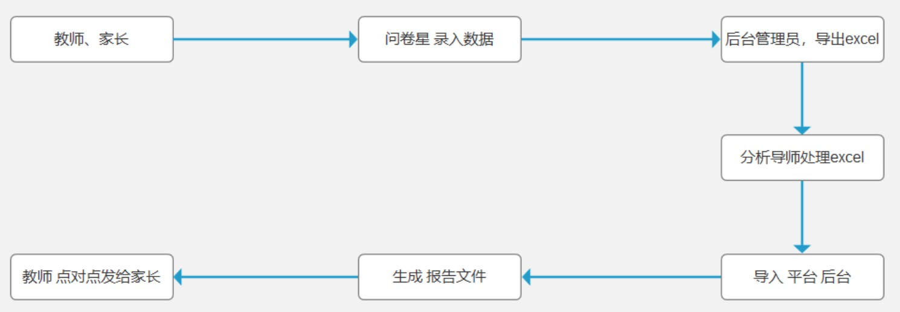

一、项目背景
1、幼儿的健康检测是目前幼儿园区建设的重点之一，同时也是园区信息化建设的重要体现；
二、用户分析
1、用户对象
海亮优教-健康管理研究院-研究员
2、用户故事
a）作为幼儿睡眠研究的工作人员，希望通过信息化技术，从后台导入模板统计数据后，系统自动生成幼儿睡眠检测报告。
b）作为幼儿睡眠研究的工作人员，希望通过信息化技术，一方面可以减少当前的大量人力投入，另一方面可以减少人为因素产生的睡眠数据错误，从而提高效率。
三、业务流程

阶段
用户范围
频次

使用时段
使用峰值
班级数量
班级人数
班级教师
第一阶段
萧山园区
每个学期使用 2 次，分别是开学后10个工作日、学期结束前10个工作日
中午或下午
2人次/秒
2
10
3-4
第二阶段
萧山园区

每个学期使用 2 次，分别是开学后10个工作日、学期结束前10个工作日
中午或下午
10人次/秒
10
10
3-4
第三阶段
海亮所有幼教
约1W个小朋友

4、整体阶段划分